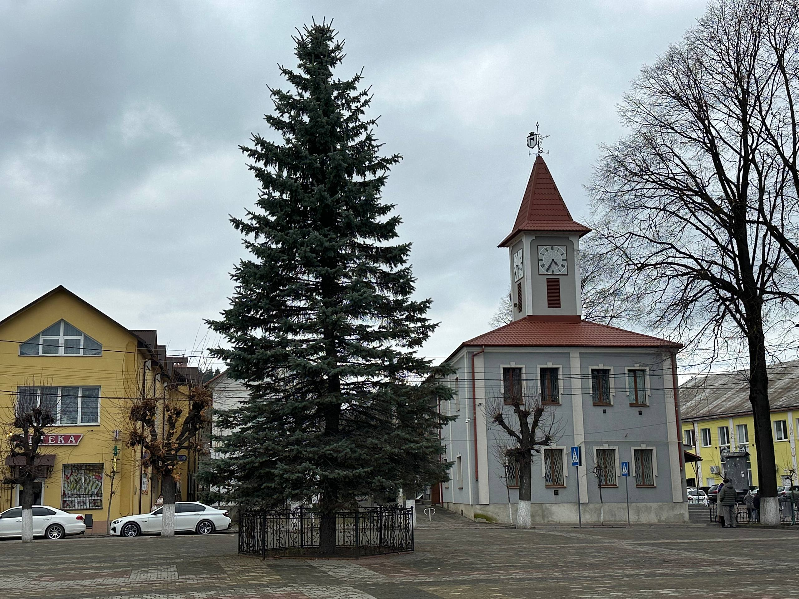
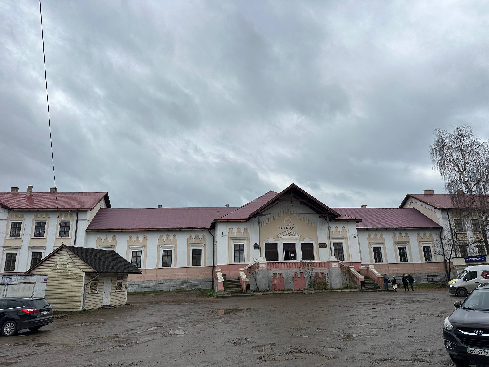
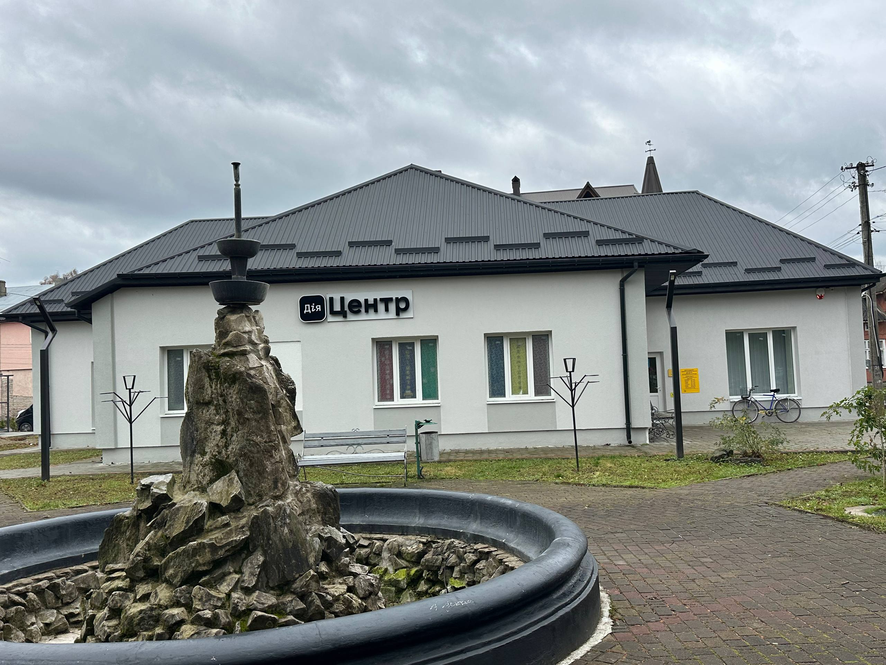
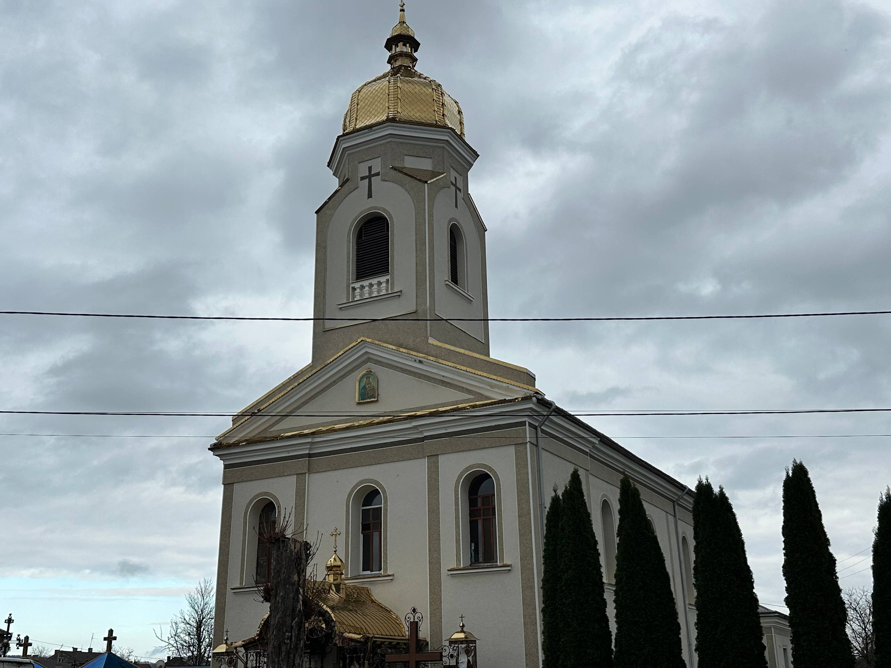
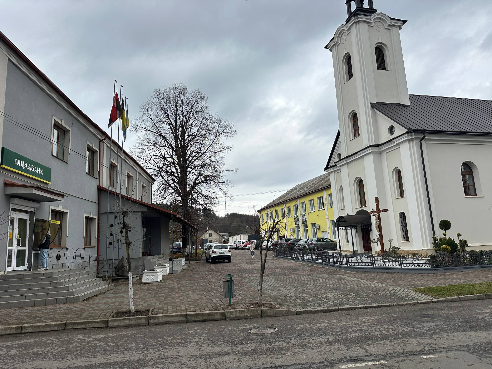

Місто Хирів:





Хирів - невелике затишне місто в Самбірському районі Львівської області, розташоване неподалік від міста Самбір.
Це місто має давню історію, перші письмові згадки про нього датуються ще в XVI-XVII століттями.
Хирів відомий своєю архітектурною та культурною спадщиною.